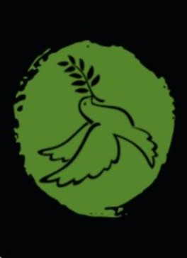
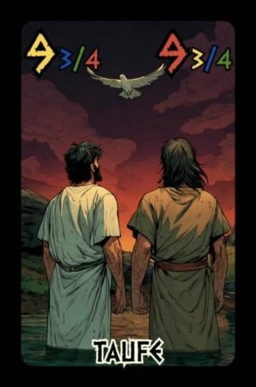

<!DOCTYPE html>
<html lang="de">
<head>
<meta charset="utf-8">
<meta name="viewport" content="width=device-width, initial-scale=1, viewport-fit=cover">
<meta name="theme-color" content="#0a0a0a">
<title>Soteria</title>
<link rel="icon" href="img/icon.png">
<link rel="preconnect" href="https://fonts.googleapis.com">
<link rel="preconnect" href="https://fonts.gstatic.com" crossorigin>
<link href="https://fonts.googleapis.com/css2?family=Uncial+Antiqua&family=Alegreya+Sans:wght@400;500;700;800&display=swap" rel="stylesheet">
<style>
:root{
  --bg:#070707; --panel:#121211; --panel2:#1a1a18; --line:rgba(255,255,255,.09);
  --ink:#f1ebdd; --mute:#a59f92; --dim:#6f6a60;
  --green:#6fae3c; --green-d:#3f6e1f; --red:#d4412f; --yellow:#efc12d; --blue:#2f72d8;
  --good:#7cc246; --bad:#e2533f;
  --r:16px; --safe-b:env(safe-area-inset-bottom,0px); --safe-t:env(safe-area-inset-top,0px);
}
*{box-sizing:border-box;-webkit-tap-highlight-color:transparent}
html,body{margin:0;background:var(--bg);color:var(--ink);font-family:"Alegreya Sans",system-ui,sans-serif;font-size:17px;line-height:1.45}
body{min-height:100dvh;background:
  radial-gradient(120% 60% at 50% -10%, rgba(111,174,60,.14), transparent 60%),
  var(--bg);}
button{font:inherit;color:inherit;border:0;background:none;cursor:pointer}
input{font:inherit;color:inherit}
.rune{font-family:"Uncial Antiqua",serif;letter-spacing:.02em}
.app{max-width:560px;margin:0 auto;padding:calc(var(--safe-t) + 8px) 16px calc(96px + var(--safe-b));}

/* header */
.top{display:flex;align-items:center;justify-content:space-between;gap:12px;padding:8px 0 14px}
.brand{display:flex;align-items:center;gap:10px}
.brand img{width:36px;height:36px;border-radius:10px;border:1px solid var(--line)}
.brand h1{margin:0;font-size:26px;font-weight:400}
.lang{display:flex;background:var(--panel);border:1px solid var(--line);border-radius:999px;padding:3px}
.lang button{padding:6px 11px;border-radius:999px;font-weight:700;font-size:13px;color:var(--mute)}
.lang button.on{background:var(--green);color:#0c1306}

/* bottom nav */
.nav{position:fixed;left:0;right:0;bottom:0;z-index:20;background:rgba(10,10,10,.92);backdrop-filter:blur(12px);-webkit-backdrop-filter:blur(12px);border-top:1px solid var(--line);padding:6px 8px calc(6px + var(--safe-b))}
.nav .in{max-width:560px;margin:0 auto;display:grid;grid-template-columns:repeat(3,1fr);gap:4px}
.nav button{display:flex;flex-direction:column;align-items:center;gap:2px;padding:8px 0;border-radius:12px;color:var(--dim);font-size:12.5px;font-weight:700}
.nav button svg{width:24px;height:24px}
.nav button.on{color:var(--ink)}
.nav button.on svg{color:var(--green)}

/* panels */
.panel{background:linear-gradient(180deg,var(--panel2),var(--panel));border:1px solid var(--line);border-radius:var(--r);padding:16px;margin-bottom:14px;position:relative}
.panel.framed{box-shadow:inset 0 0 0 6px #000, inset 0 0 0 7px rgba(255,255,255,.06)}
.h2{font-size:21px;margin:0 0 4px;font-weight:400}
.sub{color:var(--mute);font-size:15px;margin:0 0 12px}
.row{display:flex;align-items:center;gap:10px}
.sp{flex:1}
.btn{display:inline-flex;align-items:center;justify-content:center;gap:8px;min-height:50px;padding:0 18px;border-radius:14px;font-weight:800;font-size:16.5px;background:var(--green);color:#0d1507;width:100%}
.btn:active{transform:translateY(1px)}
.btn.ghost{background:transparent;color:var(--ink);border:1px solid var(--line)}
.btn.small{min-height:40px;font-size:14.5px;padding:0 12px;width:auto}
.btn:disabled{opacity:.35;pointer-events:none}
.pill{display:inline-flex;align-items:center;gap:6px;font-size:12.5px;font-weight:800;padding:3px 9px;border-radius:999px;background:rgba(255,255,255,.07);color:var(--mute);text-transform:uppercase;letter-spacing:.04em}
.pill.g{background:rgba(111,174,60,.18);color:var(--good)}
.pill.r{background:rgba(226,83,63,.16);color:#ff8a77}
.pill.y{background:rgba(239,193,45,.16);color:var(--yellow)}

/* setup */
.plist{display:flex;flex-direction:column;gap:8px;margin:10px 0 12px}
.pin{display:flex;align-items:center;gap:8px;background:#0b0b0a;border:1px solid var(--line);border-radius:12px;padding:4px 4px 4px 12px}
.pin .n{width:22px;color:var(--dim);font-weight:800;font-size:14px}
.pin input{flex:1;background:none;border:0;outline:0;padding:10px 0;min-width:0;font-size:17px}
.icon-btn{width:40px;height:40px;border-radius:10px;display:grid;place-items:center;color:var(--mute)}
.icon-btn:active{background:rgba(255,255,255,.06)}
.toggles{display:flex;flex-direction:column;gap:2px;margin-top:6px}
.tg{display:flex;align-items:center;gap:12px;padding:9px 2px;border-bottom:1px solid var(--line)}
.tg:last-child{border-bottom:0}
.tg img{width:34px;height:50px;object-fit:cover;border-radius:5px}
.tg span{flex:1;font-weight:600}
.sw{width:50px;height:30px;border-radius:999px;background:#2b2b28;position:relative;transition:.2s;flex:none}
.sw::after{content:"";position:absolute;top:3px;left:3px;width:24px;height:24px;border-radius:50%;background:#d9d3c4;transition:.2s}
.sw.on{background:var(--green)}
.sw.on::after{left:23px;background:#fff}
.stepper{display:flex;align-items:center;gap:6px}
.stepper button{width:44px;height:44px;border-radius:12px;background:#22221f;border:1px solid var(--line);font-size:22px;font-weight:700;display:grid;place-items:center}
.stepper button:disabled{opacity:.3}
.stepper .v{min-width:38px;text-align:center;font-size:24px;font-weight:800;font-variant-numeric:tabular-nums}

/* round */
.roundhead{display:flex;align-items:flex-end;justify-content:space-between;gap:10px;margin-bottom:10px}
.roundhead>div:first-child{flex:1;min-width:0}
.roundhead .big{font-size:40px;line-height:1.05;white-space:nowrap}
.roundhead .cards{flex:none;text-align:right;color:var(--mute);font-size:14px;max-width:96px;line-height:1.2}
.roundhead .cards b{display:block;color:var(--ink);font-size:24px}
.prow{display:flex;align-items:center;gap:10px;padding:10px 0;border-top:1px solid var(--line)}
.prow:first-of-type{border-top:0}
.prow .who{flex:1;min-width:0}
.prow .who .nm{font-weight:800;font-size:17px;white-space:nowrap;overflow:hidden;text-overflow:ellipsis}
.prow .who .meta{font-size:13px;color:var(--mute)}
.prow.lock .meta{color:var(--yellow)}
.taufebtn{margin:4px 0 12px;justify-content:flex-start;gap:12px;font-size:15.5px}
.taufebtn img{width:28px;height:40px;object-fit:cover;border-radius:4px}
.bidtag s{color:var(--dim)}
.badge-start{color:var(--green);font-weight:800}
.warn{background:rgba(239,193,45,.1);border:1px solid rgba(239,193,45,.3);color:#f4d97a;border-radius:12px;padding:10px 12px;font-size:14.5px;margin:10px 0}
.warn.bad{background:rgba(226,83,63,.1);border-color:rgba(226,83,63,.35);color:#ffab9c}
.sumline{display:flex;justify-content:space-between;color:var(--mute);font-size:14.5px;margin:6px 0 12px}
.sumline b{color:var(--ink)}
.bidtag{font-size:12.5px;color:var(--mute);display:flex;align-items:center;gap:6px;margin-top:2px}
.mini{font-size:12px;font-weight:800;border:1px solid var(--line);border-radius:8px;padding:2px 7px;color:var(--mute);background:#1d1d1a}

/* leaderboard */
.lb{display:flex;flex-direction:column;gap:6px}
.lbi{display:flex;align-items:center;gap:10px;padding:8px 10px;border-radius:12px;background:#0d0d0c;border:1px solid var(--line)}
.lbi .pos{width:26px;height:26px;border-radius:8px;display:grid;place-items:center;font-weight:800;font-size:14px;background:#22221f;color:var(--mute)}
.lbi.first .pos{background:var(--yellow);color:#231b00}
.lbi .nm{flex:1;font-weight:700;min-width:0;overflow:hidden;text-overflow:ellipsis;white-space:nowrap}
.lbi .pt{font-weight:800;font-size:19px;font-variant-numeric:tabular-nums}
.delta{font-size:12.5px;font-weight:800;margin-left:6px}
.delta.p{color:var(--good)} .delta.n{color:var(--bad)}

/* table */
.tablewrap{overflow-x:auto;-webkit-overflow-scrolling:touch;border-radius:12px;border:1px solid var(--line)}
table.sheet{border-collapse:collapse;width:100%;font-variant-numeric:tabular-nums;font-size:14.5px;background:#0c0c0b}
.sheet th,.sheet td{padding:8px 8px;text-align:center;border-bottom:1px solid var(--line);white-space:nowrap}
.sheet th{position:sticky;top:0;background:#151513;font-weight:800;font-size:13px;color:var(--mute)}
.sheet td:first-child,.sheet th:first-child{position:sticky;left:0;background:#151513;color:var(--mute);font-weight:800;z-index:1}
.sheet .c{display:flex;flex-direction:column;line-height:1.15}
.sheet .c small{color:var(--dim);font-size:11.5px}
.sheet .ok{color:var(--good)} .sheet .no{color:var(--bad)}
.sheet tr.tap{cursor:pointer}
.sheet tr.tap:active td{background:#1b1b18}

/* glossary */
.chips{display:flex;gap:8px;overflow-x:auto;padding-bottom:4px;margin:0 -16px 12px;padding-left:16px;padding-right:16px;scrollbar-width:none}
.chips::-webkit-scrollbar{display:none}
.chip{flex:none;padding:8px 14px;border-radius:999px;border:1px solid var(--line);font-weight:700;font-size:14.5px;color:var(--mute);background:var(--panel)}
.chip.on{background:var(--ink);color:#111;border-color:var(--ink)}
.grid{display:grid;grid-template-columns:repeat(3,1fr);gap:10px}
@media (min-width:480px){.grid{grid-template-columns:repeat(4,1fr)}}
.cardbtn{display:flex;flex-direction:column;gap:6px;text-align:left}
.cardbtn img{width:100%;aspect-ratio:2/3;object-fit:cover;border-radius:10px;display:block;box-shadow:0 6px 18px rgba(0,0,0,.5);border:1px solid rgba(255,255,255,.06)}
.cardbtn span{font-weight:700;font-size:14px;line-height:1.2}
.cardbtn small{color:var(--dim);font-size:12px;font-weight:700;text-transform:uppercase;letter-spacing:.04em}
.secttl{margin:18px 0 10px;font-size:19px;font-weight:400}
.suits{display:grid;grid-template-columns:repeat(4,1fr);gap:8px;margin-top:10px}
.suit{border-radius:12px;padding:10px 6px;text-align:center;font-size:13px;font-weight:700;background:#0c0c0b;border:1px solid var(--line)}
.suit i{display:block;width:34px;height:34px;border-radius:50%;margin:0 auto 6px;display:grid;place-items:center;font-style:normal;font-size:17px;color:#111}

/* sheet modal */
.scrim{position:fixed;inset:0;background:rgba(0,0,0,.7);z-index:40;display:flex;align-items:flex-end;justify-content:center;animation:fade .2s}
.modal{width:100%;max-width:560px;max-height:92dvh;overflow:auto;background:#121211;border:1px solid var(--line);border-bottom:0;border-radius:22px 22px 0 0;padding:10px 18px calc(22px + var(--safe-b));animation:up .25s cubic-bezier(.2,.8,.2,1)}
.grab{width:42px;height:5px;border-radius:9px;background:#3a3a36;margin:4px auto 12px}
.modal .hero{display:flex;justify-content:center;margin:4px 0 14px}
.modal .hero img{width:min(62vw,250px);border-radius:14px;box-shadow:0 14px 40px rgba(0,0,0,.7)}
.modal h3{margin:0 0 6px;font-size:26px;font-weight:400;text-align:center}
.modal .tags{display:flex;justify-content:center;gap:6px;margin-bottom:12px}
.modal p{margin:0 0 10px}
.modal .story{color:var(--mute);font-style:italic;border-left:3px solid var(--green-d);padding-left:12px}
@keyframes up{from{transform:translateY(40px);opacity:.4}to{transform:none;opacity:1}}
@keyframes fade{from{opacity:0}}

/* rules */
.acc{border:1px solid var(--line);border-radius:14px;background:var(--panel);margin-bottom:8px;overflow:hidden}
.acc>button{width:100%;display:flex;align-items:center;gap:12px;padding:14px 14px;text-align:left;font-weight:800;font-size:16.5px}
.acc>button .num{width:28px;height:28px;border-radius:8px;display:grid;place-items:center;background:#22221f;color:var(--green);font-size:14px;flex:none}
.acc>button svg{margin-left:auto;transition:.2s;color:var(--dim);flex:none}
.acc.open>button svg{transform:rotate(180deg)}
.acc .body{display:none;padding:0 16px 16px;color:#ddd6c6}
.acc.open .body{display:block}
.acc .body p{margin:0 0 10px}
.ex{background:#0b0b0a;border:1px solid var(--line);border-radius:12px;padding:10px 12px;margin:10px 0;font-size:15.5px}
.ex b.t{display:block;color:var(--yellow);font-size:13px;text-transform:uppercase;letter-spacing:.05em;margin-bottom:4px}
.formula{display:grid;gap:8px;margin:10px 0}
.formula div{display:flex;justify-content:space-between;gap:10px;padding:10px 12px;border-radius:12px;background:#0b0b0a;border:1px solid var(--line);font-weight:700}
.formula .p{color:var(--good)} .formula .n{color:var(--bad)}
.zt{width:100%;border-collapse:collapse;font-size:14px;margin-top:8px}
.zt th,.zt td{border-bottom:1px solid var(--line);padding:6px 4px;text-align:center}
.zt th{color:var(--mute);font-size:12.5px}
.hero-intro{text-align:center;padding:22px 16px}
.hero-intro img{width:96px;height:130px;object-fit:cover;border-radius:12px;box-shadow:0 12px 36px rgba(0,0,0,.7);margin-bottom:10px}
.hero-intro h2{margin:0;font-size:34px;font-weight:400}
.hero-intro p{color:var(--mute);margin:6px auto 0;max-width:420px;font-size:15.5px}

/* language gate */
.gate{position:fixed;inset:0;z-index:60;background:radial-gradient(100% 60% at 50% 0%, rgba(111,174,60,.2), transparent 60%),#070707;display:flex;flex-direction:column;align-items:center;justify-content:center;padding:24px;text-align:center}
.gate img{width:120px;height:164px;object-fit:cover;border-radius:14px;box-shadow:0 18px 50px rgba(0,0,0,.8);margin-bottom:18px}
.gate h1{font-size:44px;margin:0 0 2px;font-weight:400}
.gate p{color:var(--mute);margin:0 0 26px}
.gate .opts{display:flex;flex-direction:column;gap:10px;width:100%;max-width:320px}
.gate .opts button{display:flex;align-items:center;gap:14px;padding:16px 18px;border-radius:16px;background:var(--panel2);border:1px solid var(--line);font-weight:800;font-size:18px;text-align:left}
.gate .opts button span{font-size:13px;font-weight:800;color:var(--green);width:30px}

.winner{text-align:center;padding:10px 0 6px}
.winner .crown{font-size:44px}
.winner h2{margin:2px 0;font-size:30px;font-weight:400}
.empty{color:var(--dim);text-align:center;padding:18px 0;font-size:15px}
.hide{display:none!important}
.toast{position:fixed;left:50%;bottom:calc(92px + var(--safe-b));transform:translateX(-50%);background:#f1ebdd;color:#111;padding:10px 16px;border-radius:12px;font-weight:700;font-size:14.5px;z-index:70;box-shadow:0 8px 30px rgba(0,0,0,.5);animation:fade .2s}
</style>
</head>
<body>
<div class="app" id="app"></div>
<nav class="nav"><div class="in" id="nav"></div></nav>
<div id="layer"></div>

<script>
/* ===================== TEXTS ===================== */
const T = {
de:{
  tagline:"Griechisch für Erlösung, Rettung.",
  chooseLang:"Sprache wählen",
  tabScore:"Punkte", tabRules:"Regeln", tabCards:"Karten",
  newGame:"Neues Spiel", players:"Spieler", playersSub:"In Sitzreihenfolge, im Uhrzeigersinn.",
  addPlayer:"Spieler hinzufügen", playerN:"Spieler", specials:"Sonderkarten im Spiel",
  specialsSub:"Bestimmt, wie viele Runden gespielt werden.",
  rounds:"Runden", roundsAuto:"automatisch aus Kartenanzahl", start:"Spiel starten",
  minPlayers:"Mindestens 2 Spieler mit Namen.",
  round:"Runde", cardsEach:"Karten pro Spieler", bidPhase:"Stichansagen", playPhase:"Gewonnene Stiche",
  startsBid:"beginnt", opens:"eröffnet den ersten Stich", lastBid:"sagt zuletzt an · nicht", forehead:"Runde 1: Karte nicht anschauen – an die Stirn! Ansage nur nach den Karten der anderen.", notAllowed:"nicht erlaubt",
  sumBids:"Summe der Ansagen", sumTricks:"Summe der Stiche", of:"von",
  forbidden:(n)=>`Die Summe darf nicht ${n} ergeben. Der letzte Spieler muss anders ansagen.`,
  toPlay:"Ansagen fertig – spielen", confirmRound:"Runde werten", back:"Zurück",
  tooMany:(n)=>`Es gibt nur ${n} Stiche in dieser Runde.`,
  fewer:(a,n)=>`${a} von ${n} Stichen vergeben. Nur möglich, wenn die Sintflut einen Stich zerstört hat.`,
  bid:"Ansage", taufeHint:"Taufe: Ansage ±1", taufeBtn:"Taufe gespielt – Ansage ändern", taufeSub:"Wer den Stich mit der Taufe gewinnt, ändert seine Ansage um 1 nach oben oder unten.", done:"Fertig", standings:"Stand", sheet:"Punktetabelle", tapEdit:"Tippe auf eine Runde, um sie zu korrigieren.",
  undo:"Letzte Runde rückgängig", endGame:"Spiel beenden", endConfirm:"Wirklich beenden?", yes:"Ja", no:"Nein",
  finished:"Spiel beendet", winner:"gewinnt", playAgain:"Gleiche Spieler, neues Spiel", fresh:"Neue Spieler",
  editRound:"Runde korrigieren", save:"Speichern", tricks:"Stiche",
  zeroBonus:(p)=>`0 richtig angesagt = ${p} Punkte`, scoreHelp:"Richtig: 20 + 10 pro Stich · Falsch: −10 pro Stich Abweichung",
  ofRounds:"von", last:"letzte Runde", resume:"Weiter",
  groups:{all:"Alle",color:"Farbkarten",narr:"Narren",held:"Helden",special:"Sonderkarten"},
  typeColor:"Farbkarte", typeNarr:"Narr", typeHeld:"Held", typeSpecial:"Sonderkarte",
  playAnytime:"Darf jederzeit gespielt werden", suitsTitle:"Die vier Farben",
  suits:["Rot","Grün","Gelb","Blau"], colorIntro:"Zahlenwerte 1 bis 13 in vier Farben. Die aufgedeckte Karte bestimmt die Trumpffarbe.",
  quickRef:"Kurzüberblick", strength:"Stärke im Stich",
},
en:{
  tagline:"Greek for salvation, rescue.",
  chooseLang:"Choose your language",
  tabScore:"Score", tabRules:"Rules", tabCards:"Cards",
  newGame:"New game", players:"Players", playersSub:"In seating order, clockwise.",
  addPlayer:"Add player", playerN:"Player", specials:"Special cards in play",
  specialsSub:"Decides how many rounds are played.",
  rounds:"Rounds", roundsAuto:"calculated from the number of cards", start:"Start game",
  minPlayers:"At least 2 players with names.",
  round:"Round", cardsEach:"cards per player", bidPhase:"Bids", playPhase:"Tricks won",
  startsBid:"bids first", opens:"leads the first trick", lastBid:"bids last · not", forehead:"Round 1: don't look at your card – hold it to your forehead! Bid only on what you see on the others.", notAllowed:"not allowed",
  sumBids:"Total bids", sumTricks:"Total tricks", of:"of",
  forbidden:(n)=>`The total can't be ${n}. The last player has to bid differently.`,
  toPlay:"Bids done – play", confirmRound:"Score round", back:"Back",
  tooMany:(n)=>`There are only ${n} tricks this round.`,
  fewer:(a,n)=>`${a} of ${n} tricks assigned. Only possible if the Flood destroyed a trick.`,
  bid:"Bid", taufeHint:"Baptism: bid ±1", taufeBtn:"Baptism played – change a bid", taufeSub:"Whoever wins the trick with Baptism changes their bid by 1, up or down.", done:"Done", standings:"Standings", sheet:"Score sheet", tapEdit:"Tap a round to correct it.",
  undo:"Undo last round", endGame:"End game", endConfirm:"End the game?", yes:"Yes", no:"No",
  finished:"Game over", winner:"wins", playAgain:"Same players, new game", fresh:"New players",
  editRound:"Correct round", save:"Save", tricks:"Tricks",
  zeroBonus:(p)=>`Correct 0 bid = ${p} points`, scoreHelp:"Correct: 20 + 10 per trick · Wrong: −10 per trick off",
  ofRounds:"of", last:"last round", resume:"Continue",
  groups:{all:"All",color:"Suit cards",narr:"Fools",held:"Heroes",special:"Special cards"},
  typeColor:"Suit card", typeNarr:"Fool", typeHeld:"Hero", typeSpecial:"Special card",
  playAnytime:"Can be played at any time", suitsTitle:"The four suits",
  suits:["Red","Green","Yellow","Blue"], colorIntro:"Values 1 to 13 in four suits. The card turned face up sets the trump suit.",
  quickRef:"Quick reference", strength:"Strength in a trick",
},
pt:{
  tagline:"Palavra grega para salvação, resgate.",
  chooseLang:"Escolha o idioma",
  tabScore:"Placar", tabRules:"Regras", tabCards:"Cartas",
  newGame:"Novo jogo", players:"Jogadores", playersSub:"Na ordem em que estão sentados, sentido horário.",
  addPlayer:"Adicionar jogador", playerN:"Jogador", specials:"Cartas especiais no jogo",
  specialsSub:"Define quantas rodadas serão jogadas.",
  rounds:"Rodadas", roundsAuto:"calculado pelo número de cartas", start:"Começar jogo",
  minPlayers:"Pelo menos 2 jogadores com nome.",
  round:"Rodada", cardsEach:"cartas por jogador", bidPhase:"Palpites", playPhase:"Vazas feitas",
  startsBid:"palpita primeiro", opens:"abre a primeira vaza", lastBid:"palpita por último · não pode", forehead:"Rodada 1: não olhe sua carta – coloque na testa! Palpite só pelo que você vê na testa dos outros.", notAllowed:"não pode",
  sumBids:"Soma dos palpites", sumTricks:"Soma das vazas", of:"de",
  forbidden:(n)=>`A soma não pode dar ${n}. O último jogador precisa mudar o palpite.`,
  toPlay:"Palpites feitos – jogar", confirmRound:"Fechar rodada", back:"Voltar",
  tooMany:(n)=>`Só existem ${n} vazas nesta rodada.`,
  fewer:(a,n)=>`${a} de ${n} vazas distribuídas. Só é possível se o Dilúvio destruiu uma vaza.`,
  bid:"Palpite", taufeHint:"Batismo: palpite ±1", taufeBtn:"Batismo jogado – mudar palpite", taufeSub:"Quem ganhar a vaza com o Batismo muda o palpite em 1, para cima ou para baixo.", done:"Pronto", standings:"Classificação", sheet:"Tabela de pontos", tapEdit:"Toque numa rodada para corrigir.",
  undo:"Desfazer última rodada", endGame:"Encerrar jogo", endConfirm:"Encerrar o jogo?", yes:"Sim", no:"Não",
  finished:"Fim de jogo", winner:"venceu", playAgain:"Mesmos jogadores, novo jogo", fresh:"Novos jogadores",
  editRound:"Corrigir rodada", save:"Salvar", tricks:"Vazas",
  zeroBonus:(p)=>`Acertar 0 = ${p} pontos`, scoreHelp:"Acertou: 20 + 10 por vaza · Errou: −10 por vaza de diferença",
  ofRounds:"de", last:"última rodada", resume:"Continuar",
  groups:{all:"Todas",color:"Cartas de cor",narr:"Tolos",held:"Heróis",special:"Especiais"},
  typeColor:"Carta de cor", typeNarr:"Tolo", typeHeld:"Herói", typeSpecial:"Carta especial",
  playAnytime:"Pode ser jogada a qualquer momento", suitsTitle:"As quatro cores",
  suits:["Vermelho","Verde","Amarelo","Azul"], colorIntro:"Valores de 1 a 13 em quatro cores. A carta virada define o trunfo.",
  quickRef:"Resumo rápido", strength:"Força na vaza",
}};

/* ===================== CARDS ===================== */
const CARDS = [
 {id:"farbe",img:"farbe_abel.jpg",type:"color",name:{de:"Farbkarten",en:"Suit cards",pt:"Cartas de cor"},
  text:{
   de:["Es gibt vier Farben mit den Werten 1 bis 13. Jede Karte zeigt eine biblische Figur – hier Abel.","Die angespielte Farbe muss bedient werden. Wer sie nicht hat, darf eine beliebige Karte spielen.","Trumpf schlägt jede andere Farbe, egal welcher Zahlenwert: eine Trumpf-1 schlägt eine 13 einer anderen Farbe."],
   en:["There are four suits with values 1 to 13. Every card shows a biblical figure – here Abel.","You must follow the suit that was led. If you don't have it, you may play any card.","Trump beats every other suit, whatever the value: a trump 1 beats a 13 of another suit."],
   pt:["São quatro cores com valores de 1 a 13. Cada carta mostra um personagem bíblico – aqui, Abel.","É obrigatório seguir a cor que abriu a vaza. Se você não tiver essa cor, pode jogar qualquer carta.","O trunfo vence qualquer outra cor, não importa o número: um 1 de trunfo ganha de um 13 de outra cor."]}},
 {id:"narr",img:"narr_isebel.jpg",type:"narr",group:"narr",name:{de:"Isebel",en:"Jezebel",pt:"Jezabel"}},
 {id:"narr2",img:"narr_pharao.jpg",type:"narr",group:"narr",name:{de:"Pharao",en:"Pharaoh",pt:"Faraó"}},
 {id:"narr3",img:"narr_herodes.jpg",type:"narr",group:"narr",name:{de:"Herodes",en:"Herod",pt:"Herodes"}},
 {id:"narr4",img:"narr_judas.jpg",type:"narr",group:"narr",name:{de:"Judas",en:"Judas",pt:"Judas"}},
 {id:"held",img:"held_elia.jpg",type:"held",group:"held",name:{de:"Elia",en:"Elijah",pt:"Elias"}},
 {id:"held2",img:"held_mose.jpg",type:"held",group:"held",name:{de:"Mose",en:"Moses",pt:"Moisés"}},
 {id:"held3",img:"held_david.jpg",type:"held",group:"held",name:{de:"David",en:"David",pt:"Davi"}},
 {id:"held4",img:"held_ester.jpg",type:"held",group:"held",name:{de:"Ester",en:"Esther",pt:"Ester"}},
 {id:"paulus",img:"paulus.jpg",type:"special",name:{de:"Saulus / Paulus",en:"Saul / Paul",pt:"Saulo / Paulo"},
  text:{
   de:["Wer diese Karte spielt, entscheidet frei, wie sie zählt: als Saulus, der Christenverfolger – also als Narr – oder als Paulus, der Apostel der Völker – also als Held."],
   en:["Whoever plays this card decides how it counts: as Saul, the persecutor of Christians – a Fool – or as Paul, the apostle to the nations – a Hero."],
   pt:["Quem joga esta carta escolhe como ela vale: como Saulo, o perseguidor dos cristãos – ou seja, um Tolo – ou como Paulo, o apóstolo dos gentios – ou seja, um Herói."]}},
 {id:"johannes",img:"johannes.jpg",type:"special",name:{de:"Johannes der Täufer",en:"John the Baptist",pt:"João Batista"},
  text:{
   de:["Wer Johannes ausgeteilt bekommt, sagt es sofort, noch vor den Stichansagen, und legt ihn in die Mitte.","Er nimmt die aufgedeckte Trumpfkarte vom Stapel und legt stattdessen Johannes darauf. Dann bestimmt er die Trumpffarbe für diese Runde frei – er kann den bisherigen Trumpf behalten oder sagen, dass es keinen Trumpf gibt.","Den Stapel so auf Johannes legen, dass die neue Trumpffarbe sichtbar ist. Erst dann folgen die Ansagen."],
   en:["Whoever is dealt John says so right away, before any bids, and places him in the middle.","They take the face-up trump card off the deck and put John there instead. Then they choose the trump suit for this round – they can keep the old trump or declare no trump at all.","Place the deck on John so the new trump colour shows. Only then are the bids made."],
   pt:["Quem receber João Batista avisa na hora, antes dos palpites, e coloca a carta no meio.","Essa pessoa tira a carta de trunfo virada do monte e coloca João Batista no lugar. Depois escolhe livremente o trunfo da rodada – pode manter o trunfo anterior ou decidir que não haverá trunfo.","Ajeite o monte sobre João Batista de forma que a nova cor de trunfo fique visível. Só então começam os palpites."]}},
 {id:"sintflut",img:"sintflut.jpg",type:"special",name:{de:"Die Sintflut",en:"The Flood",pt:"O Dilúvio"},
  text:{
   de:["Wer die Sintflut spielt, zerstört den Stich – niemand gewinnt ihn.","Ausnahme: Wird Noah (die grüne 5) im selben Stich gespielt, gewinnt Noah den Stich."],
   en:["Whoever plays the Flood destroys the trick – nobody wins it.","Exception: if Noah (the green 5) is played in the same trick, Noah wins the trick."],
   pt:["Quem joga o Dilúvio destrói a vaza – ninguém ganha.","Exceção: se Noé (o 5 verde) for jogado na mesma vaza, Noé ganha a vaza."]},
  story:{de:"Gott wollte die Menschheit nicht endgültig vernichten und ließ Noah die Arche bauen. Darauf überlebten Noah, seine Familie und die Tiere die Flut.",en:"God did not want to wipe out humanity for good, so He had Noah build the ark. Noah, his family and the animals survived the flood on it.",pt:"Deus não quis destruir a humanidade de vez e mandou Noé construir a arca. Nela, Noé, sua família e os animais sobreviveram ao dilúvio."}},
 {id:"noah",img:"noah.jpg",type:"color",name:{de:"Noah · Grüne 5",en:"Noah · Green 5",pt:"Noé · 5 verde"},
  text:{
   de:["Eine normale grüne 5 – mit einer Besonderheit: Liegt die Sintflut im selben Stich, gewinnt Noah den Stich."],
   en:["A normal green 5 – with one twist: if the Flood is in the same trick, Noah wins the trick."],
   pt:["Um 5 verde comum – com um detalhe: se o Dilúvio estiver na mesma vaza, Noé ganha a vaza."]}},
 {id:"abendmahl",img:"abendmahl.jpg",type:"special",name:{de:"Das Abendmahl",en:"The Last Supper",pt:"A Santa Ceia"},
  text:{
   de:["Zahlenwert 7½: schlägt alles bis 7, verliert gegen alles ab 8. Wer es spielt, wählt die Farbe frei (auch Trumpf).","Nach diesem Stich gibt jeder Spieler eine beliebige Karte an seinen linken Nachbarn weiter. Die erhaltene Karte erst ansehen, nachdem man selbst abgegeben hat.","Wird das Abendmahl im letzten Stich einer Runde gespielt, entfällt das Weitergeben."],
   en:["Value 7½: beats everything up to 7, loses to everything from 8. Whoever plays it picks its suit (trump included).","After this trick, every player passes any one card to the neighbour on their left. Only look at the card you receive after you have passed yours.","If the Last Supper is played in the last trick of a round, there is no passing."],
   pt:["Vale 7½: ganha de tudo até 7 e perde de tudo a partir de 8. Quem joga escolhe a cor (inclusive o trunfo).","Depois dessa vaza, cada jogador passa uma carta qualquer para o vizinho da esquerda. Só olhe a carta que recebeu depois de passar a sua.","Se a Santa Ceia for jogada na última vaza da rodada, ninguém passa carta."]}},
 {id:"taufe",img:"taufe.jpg",type:"special",name:{de:"Die Taufe",en:"Baptism",pt:"O Batismo"},
  text:{
   de:["Zahlenwert 9¾: schlägt alles bis 9, verliert gegen alles ab 10. Wer sie spielt, wählt die Farbe frei (auch Trumpf).","Wer den Stich mit der Taufe gewinnt, muss seine Ansage um eins nach oben oder unten korrigieren – egal, wer die Taufe gespielt hat. Hat er schon mehr Stiche als die neue Ansage, geht es nur nach oben."],
   en:["Value 9¾: beats everything up to 9, loses to everything from 10. Whoever plays it picks its suit (trump included).","Whoever wins the trick containing Baptism must change their bid by one, up or down – no matter who played it. If they already have more tricks than the lower bid, they must go up."],
   pt:["Vale 9¾: ganha de tudo até 9 e perde de tudo a partir de 10. Quem joga escolhe a cor (inclusive o trunfo).","Quem ganhar a vaza com o Batismo precisa mudar seu palpite em 1, para cima ou para baixo – não importa quem jogou a carta. Se já tiver feito mais vazas do que o palpite menor, só pode subir."]},
  ex:{de:"Trumpf Gelb. Jana liegt mit der gelben 7 vorne; sie hat 3 angesagt und braucht noch einen. Jannis hat 1 angesagt und schon erreicht und spielt als Letzter die Taufe. Wählt er Gelb, gewinnt er und erhöht auf 2 – passt wieder. Wählt er Grün, gewinnt Jana ihren 3. Stich, muss aber auf 4 erhöhen.",en:"Trump is yellow. Jana leads with the yellow 7; she bid 3 and needs one more. Jannis bid 1, already has it and plays Baptism last. If he picks yellow he wins and raises to 2 – right again. If he picks green, Jana takes her 3rd trick but must raise to 4.",pt:"Trunfo amarelo. Jana está ganhando com o 7 amarelo; palpitou 3 e precisa de mais uma. Jannis palpitou 1, já fez, e joga o Batismo por último. Se escolher amarelo, ganha e sobe para 2 – acerta de novo. Se escolher verde, Jana faz sua 3ª vaza, mas tem que subir para 4."}},
 {id:"simson",img:"simson.jpg",type:"special",name:{de:"Simson",en:"Samson",pt:"Sansão"},
  text:{
   de:["Die stärkste Karte im Spiel – stärker als jeder Held. Liegt schon ein Held im Stich, schlägt Simson ihn trotzdem.","Nur Delila kann Simson besiegen. Simson und Delila kommen nur gemeinsam ins Spiel."],
   en:["The strongest card in the game – stronger than any Hero. Even if a Hero is already in the trick, Samson beats it.","Only Delilah can defeat Samson. Samson and Delilah are added or removed together."],
   pt:["A carta mais forte do jogo – mais forte que qualquer Herói. Mesmo que já tenha um Herói na vaza, Sansão ganha.","Só Dalila vence Sansão. Sansão e Dalila entram ou saem do jogo sempre juntos."]},
  story:{de:"Gott schenkte Simson übermenschliche Kraft, solange er sich nie die Haare schneiden ließ.",en:"God gave Samson superhuman strength as long as he never cut his hair.",pt:"Deus deu a Sansão uma força sobre-humana enquanto ele nunca cortasse o cabelo."}},
 {id:"delila",img:"delila.jpg",type:"special",name:{de:"Delila",en:"Delilah",pt:"Dalila"},
  text:{
   de:["Die schwächste Karte im Spiel – sogar schwächer als die Narren.","Aber: Liegen Simson und Delila im selben Stich, gewinnt Delila."],
   en:["The weakest card in the game – even weaker than the Fools.","But: if Samson and Delilah are in the same trick, Delilah wins."],
   pt:["A carta mais fraca do jogo – mais fraca até que os Tolos.","Mas: se Sansão e Dalila estiverem na mesma vaza, Dalila ganha."]},
  story:{de:"Delila entlockte Simson das Geheimnis seiner Kraft und verriet es seinen Feinden.",en:"Delilah coaxed the secret of his strength out of Samson and betrayed it to his enemies.",pt:"Dalila arrancou de Sansão o segredo da sua força e o entregou aos inimigos dele."}},
 {id:"prophetie",img:"prophetie.jpg",type:"special",name:{de:"Die Prophetie",en:"Prophecy",pt:"A Profecia"},
  text:{
   de:["Wenn du dran bist, lege die Prophetie in die Mitte. Zieh die obersten drei Karten vom Stapel und schau sie dir an.","Wähle eine davon und spiele sie sofort aus – sie zählt für diesen Stich. Die anderen zwei legst du verdeckt unter den Stapel.","Ist Johannes der Täufer unter den drei Karten, darfst du ihn spielen und die Trumpffarbe für den Rest der Runde ändern. Dann verlierst du aber den aktuellen Stich und nimmst die aufgedeckte Karte nicht auf."],
   en:["On your turn, place Prophecy in the middle. Draw the top three cards of the deck and look at them.","Pick one and play it straight away – it counts for this trick. Put the other two face down under the deck.","If John the Baptist is among the three, you may play him and change trump for the rest of the round. But then you lose the current trick and don't pick up the face-up card."],
   pt:["Na sua vez, coloque a Profecia no meio. Pegue as três cartas de cima do monte e olhe sem mostrar.","Escolha uma e jogue na hora – ela vale para esta vaza. As outras duas voltam viradas para baixo, embaixo do monte.","Se João Batista estiver entre as três, você pode jogá-lo e mudar o trunfo pelo resto da rodada. Mas aí você perde a vaza atual e não pega a carta virada do monte."]}},
];
const NARR_TEXT={
 de:["Narren können keine andere Karte schlagen – außer einen anderen Narren. Liegen mehrere Narren im Stich, gewinnt der zuerst gespielte.","Es gibt vier Narren. Als Sonderkarte dürfen sie jederzeit gespielt werden, auch wenn man bedienen könnte – praktisch, um einen Stich loszuwerden."],
 en:["Fools can't beat any card except another Fool. If several Fools are played in one trick, the first one wins.","There are four Fools. As special cards they can be played at any time, even if you could follow suit – handy for dodging a trick."],
 pt:["Os Tolos não ganham de nenhuma carta – só de outro Tolo. Se vários Tolos forem jogados na mesma vaza, ganha o primeiro.","São quatro Tolos. Como cartas especiais, podem ser jogados a qualquer momento, mesmo que você pudesse seguir a cor – ótimo para fugir de uma vaza."]};
const HELD_TEXT={
 de:["Helden sind die stärksten Karten im Grundspiel: Sie schlagen jede Karte, auch Trumpf. Liegen mehrere Helden im Stich, gewinnt der zuerst gespielte.","Es gibt vier Helden. Als Sonderkarte dürfen sie jederzeit gespielt werden, auch wenn man bedienen könnte."],
 en:["Heroes are the strongest cards in the base game: they beat every card, trump included. If several Heroes are played in one trick, the first one wins.","There are four Heroes. As special cards they can be played at any time, even if you could follow suit."],
 pt:["Os Heróis são as cartas mais fortes do jogo básico: ganham de qualquer carta, inclusive do trunfo. Se vários Heróis forem jogados na mesma vaza, ganha o primeiro.","São quatro Heróis. Como cartas especiais, podem ser jogados a qualquer momento, mesmo que você pudesse seguir a cor."]};

/* toggleable special cards (affect deck size) */
const SPECIAL_SET=[
 {k:"paulus",n:1},{k:"johannes",n:1},{k:"sintflut",n:1},{k:"abendmahl",n:1},{k:"taufe",n:1},{k:"simson",n:2,label:{de:"Simson & Delila",en:"Samson & Delilah",pt:"Sansão & Dalila"}},{k:"prophetie",n:1}
];
const BASE_DECK=60; // 4×13 + 4 Narren + 4 Helden

/* ===================== RULES ===================== */
const RULES={
de:[
 {t:"Ziel",b:`<p>Reihum spielt jeder eine Karte in die Mitte. Hat jeder gespielt, gewinnt die höchste Karte den Stich.</p><p>Punkte gibt es, wenn man vor der Runde <b>richtig ansagt</b>, wie viele Stiche man gewinnen wird. Am Ende gewinnt, wer die meisten Punkte hat.</p><p>Fürs Grundspiel braucht ihr nur Farbkarten, Helden und Narren. Die übrigen Sonderkarten erst mal beiseitelegen.</p>`},
 {t:"Vorbereitung",b:`<p>Wählt einen Schriftführer. Er trägt eure Namen in Sitzreihenfolge (im Uhrzeigersinn) ein und notiert Ansagen und Punkte – oder nutzt einfach den Punkte-Tab in dieser App. Dann alle Karten gründlich mischen.</p>`},
 {t:"Karten austeilen",b:`<p>Runde 1: jeder bekommt <b>1 Karte</b> – und schaut sie <b>nicht</b> an, sondern hält sie sich an die <b>Stirn</b>. Alle sehen die Karten der anderen, nur die eigene nicht. Die Ansage (0 oder 1) gibst du also nur nach dem, was du bei den anderen siehst.</p><p>Ab Runde 2 normal verdeckt auf die Hand: Runde 2: 2 Karten, Runde 3: 3 Karten, und so weiter.</p><p>Danach wird eine Karte aufgedeckt auf den Stapel gelegt: ihre Farbe ist <b>Trumpf</b>. Ist es eine Sonderkarte, gibt es in dieser Runde keinen Trumpf. Den Stapel so darauflegen, dass nur die Trumpffarbe sichtbar bleibt.</p><p>Nach jeder Runde alle Karten einsammeln und neu mischen. Gespielt wird, bis in einer Runde alle Karten ausgeteilt sind.</p>`},
 {t:"Spielablauf",b:`<p>In Runde 1 eröffnet der erste Spieler der Tabelle den ersten Stich, in Runde 2 der zweite, und so weiter. Innerhalb der Runde eröffnet immer, wer den letzten Stich gewonnen hat.</p><p>Die erste Karte bestimmt die Farbe, die alle <b>bedienen müssen</b>. Wer die Farbe nicht hat, darf eine beliebige Karte spielen. Gewertet werden nur die angespielte Farbe und Trumpf.</p><p>Beginnt der Stich mit Sonderkarten, muss die Farbe der ersten Farbkarte bedient werden.</p><p>Trumpf ist immer stärker als andere Farben – eine Trumpf-1 schlägt eine 13 einer anderen Farbe.</p><div class="ex"><b class="t">Beispiel · Trumpf Rot</b>Jannis eröffnet mit der gelben 6. Finn hat kein Gelb und wirft die grüne 8 ab – sie zählt nicht. Jana muss ihre gelbe 3 bedienen, obwohl sie lieber die rote 8 spielen würde. Anne hat kein Gelb und spielt die rote 2: Trumpf, also gewinnt Anne und eröffnet den nächsten Stich.</div>`},
 {t:"Narren & Helden",b:`<p><b>Narren</b> (4) schlagen keine Karte außer einem anderen Narren. Mehrere Narren: der zuerst gespielte gewinnt.</p><p><b>Helden</b> (4) sind die stärksten Karten im Grundspiel und schlagen alles, auch Trumpf. Mehrere Helden: der zuerst gespielte gewinnt.</p><p>Sonderkarten dürfen <b>jederzeit</b> gespielt werden, auch wenn man bedienen könnte.</p><div class="ex"><b class="t">Beispiel · Trumpf Blau</b>Anne beginnt mit einem Narren. Jannis spielt die blaue 13 – jetzt muss Blau bedient werden. Finn will seine blaue 10 nicht abgeben und spielt einen Narren. Jana spielt einen Helden und gewinnt.</div>`},
 {t:"Stich gewinnen",b:`<p>Es gewinnt: der zuerst gespielte <b>Held</b> – sonst der höchste <b>Trumpf</b> – sonst die höchste Karte der <b>angespielten Farbe</b>.</p><p>Der Gewinner legt den Stich als Stapel vor sich ab, damit alle sehen, wie viele er hat.</p>`},
 {t:"Die Stichansage",b:`<p>Vor jeder Runde schaut jeder in seine Karten und sagt an, wie viele Stiche er gewinnen wird. In Runde 1 beginnt der erste Spieler der Tabelle, dann reihum nach links. In Runde 2 beginnt der zweite Spieler, und so weiter.</p><p><b>Wichtig:</b> Die Summe aller Ansagen darf <b>nicht</b> gleich der Zahl der möglichen Stiche sein. Der letzte Spieler muss seine Ansage danach richten.</p><div class="ex"><b class="t">Beispiel · 2 Stiche</b>Anne sagt 1, Jannis 0, Finn 0. Jana darf nicht 1 sagen (Summe wäre 2) – sie muss 0 oder 2 ansagen.</div>`},
 {t:"Punkte",b:`<div class="formula"><div><span>Richtige Ansage</span><span class="p">20 + 10 pro Stich</span></div><div><span>Falsche Ansage</span><span class="n">−10 pro Stich Abweichung</span></div></div><div class="ex"><b class="t">Beispiel</b>Jannis sagt 2, macht 2 → 40. Finn sagt 0, macht 1 → −10. Jana sagt 0, macht 0 → 20.</div>`},
 {t:"Sonderregel: 0 Stiche",b:`<p>Ab der Runde, in der jeder <b>so viele Karten wie Mitspieler</b> hat, gibt eine richtige 0-Ansage <b>30</b> statt 20 Punkte. Bei doppelt so vielen Karten wie Spielern <b>40</b>, bei dreifach <b>50</b>, und so weiter.</p><p>Für jede andere richtige Ansage bleibt es bei 20 + 10 pro Stich.</p><div class="ex"><b class="t">Beispiel · 3 Spieler, Runde 12 (12 Karten = 4×)</b>Jannis sagt 7, macht 6 → −10. Finn sagt 3, macht 3 → 50. Jana sagt 0, macht 0 → 60.</div>%ZT%<p>Die App rechnet das automatisch.</p>`},
 {t:"Sonderkarten",b:`<p>Jede Sonderkarte kann nach Lust hinzugefügt oder weggelassen werden. Beim ersten Mal ohne spielen, dann eine nach der anderen dazunehmen. Am meisten Spaß macht Soteria mit allen Karten!</p><p>Alle Details mit Bild findet ihr im Tab <b>Karten</b>.</p>`},
],
en:[
 {t:"Goal",b:`<p>Everyone plays one card into the middle in turn. Once everyone has played, the highest card wins the trick.</p><p>You score by <b>correctly predicting</b>, before the round, how many tricks you'll win. Highest score at the end wins.</p><p>For the base game you only need the suit cards, Heroes and Fools. Leave the other special cards aside for now.</p>`},
 {t:"Setup",b:`<p>Pick a scorekeeper who writes everyone's name in seating order (clockwise) and records bids and points – or just use the Score tab in this app. Then shuffle all cards well.</p>`},
 {t:"Dealing",b:`<p>Round 1: everyone gets <b>1 card</b> – and does <b>not</b> look at it. Hold it against your <b>forehead</b> instead. Everyone sees the others' cards, just not their own, so you bid (0 or 1) based only on what you see on the others.</p><p>From round 2 on, cards go in your hand as usual: round 2: 2 cards, round 3: 3 cards, and so on.</p><p>Then one card is turned face up on the deck: its suit is <b>trump</b>. If it's a special card, there's no trump this round. Place the deck on it so only the trump colour shows.</p><p>After each round, collect and reshuffle everything. Keep playing until all cards are dealt in a single round.</p>`},
 {t:"How a round plays",b:`<p>In round 1 the first player on the sheet leads the first trick, in round 2 the second player, and so on. Within a round, whoever won the last trick leads the next.</p><p>The first card sets the suit everyone <b>must follow</b>. If you don't have it, you may play any card. Only the suit led and trump count.</p><p>If a trick starts with special cards, follow the suit of the first suit card played.</p><p>Trump always beats other suits – a trump 1 beats a 13 of another suit.</p><div class="ex"><b class="t">Example · Trump red</b>Jannis leads the yellow 6. Finn has no yellow and dumps the green 8 – it doesn't count. Jana has to follow with her yellow 3, even though she'd rather play the red 8. Anne has no yellow and plays the red 2: trump, so Anne wins and leads next.</div>`},
 {t:"Fools & Heroes",b:`<p><b>Fools</b> (4) beat nothing except another Fool. Several Fools: the first one played wins.</p><p><b>Heroes</b> (4) are the strongest cards in the base game and beat everything, trump included. Several Heroes: the first one played wins.</p><p>Special cards can be played <b>at any time</b>, even if you could follow suit.</p><div class="ex"><b class="t">Example · Trump blue</b>Anne leads a Fool. Jannis plays the blue 13 – now blue must be followed. Finn doesn't want to give up his blue 10 and plays a Fool. Jana plays a Hero and wins.</div>`},
 {t:"Winning a trick",b:`<p>The winner is: the first <b>Hero</b> played – otherwise the highest <b>trump</b> – otherwise the highest card of the <b>suit led</b>.</p><p>The winner stacks the trick in front of them so everyone can see their count.</p>`},
 {t:"Bidding",b:`<p>Before each round, everyone looks at their cards and says how many tricks they'll win. In round 1 the first player on the sheet starts, then it goes left. In round 2 the second player starts, and so on.</p><p><b>Important:</b> the total of all bids must <b>not</b> equal the number of tricks available. The last player has to bid accordingly.</p><div class="ex"><b class="t">Example · 2 tricks</b>Anne bids 1, Jannis 0, Finn 0. Jana can't bid 1 (total would be 2) – she must bid 0 or 2.</div>`},
 {t:"Scoring",b:`<div class="formula"><div><span>Correct bid</span><span class="p">20 + 10 per trick</span></div><div><span>Wrong bid</span><span class="n">−10 per trick off</span></div></div><div class="ex"><b class="t">Example</b>Jannis bids 2, wins 2 → 40. Finn bids 0, wins 1 → −10. Jana bids 0, wins 0 → 20.</div>`},
 {t:"Special rule: zero tricks",b:`<p>From the round where each player holds <b>as many cards as there are players</b>, a correct bid of 0 scores <b>30</b> instead of 20. With twice as many cards as players it's <b>40</b>, three times <b>50</b>, and so on.</p><p>Every other correct bid stays at 20 + 10 per trick.</p><div class="ex"><b class="t">Example · 3 players, round 12 (12 cards = 4×)</b>Jannis bids 7, wins 6 → −10. Finn bids 3, wins 3 → 50. Jana bids 0, wins 0 → 60.</div>%ZT%<p>The app does this math for you.</p>`},
 {t:"Special cards",b:`<p>Add or leave out any special card as you like. Play without them the first time, then add them one by one. Soteria is most fun with every card in!</p><p>All the details, with pictures, are in the <b>Cards</b> tab.</p>`},
],
pt:[
 {t:"Objetivo",b:`<p>Cada jogador, na sua vez, joga uma carta no meio. Quando todos jogaram, a carta mais alta ganha a <b>vaza</b> (o conjunto de cartas daquela mão).</p><p>Você faz pontos quando <b>acerta o palpite</b>, feito antes da rodada, de quantas vazas vai ganhar. Vence quem tiver mais pontos no fim.</p><p>No jogo básico você usa só as cartas de cor, os Heróis e os Tolos. Deixe as outras especiais de lado por enquanto.</p>`},
 {t:"Preparação",b:`<p>Escolham alguém para marcar os pontos. Essa pessoa anota os nomes na ordem em que estão sentados (sentido horário), os palpites e os pontos – ou usem a aba Placar deste app. Depois embaralhem bem todas as cartas.</p>`},
 {t:"Distribuindo as cartas",b:`<p>Rodada 1: cada um recebe <b>1 carta</b> – e <b>não</b> olha. Coloca a carta na <b>testa</b>, virada para os outros. Todo mundo vê a carta dos outros, menos a própria. Então o palpite (0 ou 1) é no escuro, só pelo que você vê na testa dos outros.</p><p>Da rodada 2 em diante, as cartas vão para a mão normalmente: rodada 2: 2 cartas, rodada 3: 3 cartas, e assim por diante.</p><p>Depois, uma carta é virada para cima sobre o monte: a cor dela é o <b>trunfo</b>. Se for uma carta especial, não tem trunfo na rodada. Coloque o monte por cima de forma que só a cor do trunfo apareça.</p><p>No fim de cada rodada, recolham e embaralhem tudo de novo. O jogo segue até a rodada em que todas as cartas são distribuídas.</p>`},
 {t:"Como a rodada funciona",b:`<p>Na rodada 1, quem está em primeiro na tabela abre a primeira vaza; na rodada 2, o segundo; e assim por diante. Dentro da rodada, quem ganhou a última vaza abre a próxima.</p><p>A primeira carta define a cor que todos <b>precisam seguir</b>. Quem não tem a cor pode jogar qualquer carta. Só contam a cor que abriu e o trunfo.</p><p>Se a vaza começar com cartas especiais, vale a cor da primeira carta de cor jogada.</p><p>O trunfo sempre vence as outras cores – um 1 de trunfo ganha de um 13 de outra cor.</p><div class="ex"><b class="t">Exemplo · Trunfo vermelho</b>Jannis abre com o 6 amarelo. Finn não tem amarelo e descarta o 8 verde – não conta. Jana tem que seguir com o 3 amarelo, mesmo querendo jogar o 8 vermelho. Anne não tem amarelo e joga o 2 vermelho: é trunfo, então Anne ganha e abre a próxima.</div>`},
 {t:"Tolos e Heróis",b:`<p><b>Tolos</b> (4) não ganham de nada, só de outro Tolo. Vários Tolos: ganha o primeiro jogado.</p><p><b>Heróis</b> (4) são as cartas mais fortes do jogo básico e ganham de tudo, inclusive do trunfo. Vários Heróis: ganha o primeiro jogado.</p><p>Cartas especiais podem ser jogadas <b>a qualquer momento</b>, mesmo que você pudesse seguir a cor.</p><div class="ex"><b class="t">Exemplo · Trunfo azul</b>Anne abre com um Tolo. Jannis joga o 13 azul – agora todos precisam seguir azul. Finn não quer gastar o 10 azul e joga um Tolo. Jana joga um Herói e ganha.</div>`},
 {t:"Quem ganha a vaza",b:`<p>Ganha: o primeiro <b>Herói</b> jogado – se não tiver, o <b>trunfo</b> mais alto – se não tiver, a carta mais alta da <b>cor que abriu</b>.</p><p>Quem ganha empilha a vaza na sua frente, para todos verem quantas já fez.</p>`},
 {t:"O palpite",b:`<p>Antes de cada rodada, cada um olha suas cartas e diz quantas vazas vai ganhar. Na rodada 1 começa o primeiro da tabela, depois segue para a esquerda. Na rodada 2 começa o segundo, e assim por diante.</p><p><b>Importante:</b> a soma dos palpites <b>não pode</b> ser igual ao número de vazas da rodada. O último a palpitar tem que se ajustar.</p><div class="ex"><b class="t">Exemplo · 2 vazas</b>Anne diz 1, Jannis 0, Finn 0. Jana não pode dizer 1 (a soma daria 2) – precisa dizer 0 ou 2.</div>`},
 {t:"Pontuação",b:`<div class="formula"><div><span>Acertou o palpite</span><span class="p">20 + 10 por vaza</span></div><div><span>Errou o palpite</span><span class="n">−10 por vaza de diferença</span></div></div><div class="ex"><b class="t">Exemplo</b>Jannis diz 2 e faz 2 → 40. Finn diz 0 e faz 1 → −10. Jana diz 0 e faz 0 → 20. Quem diz 3 e faz 1 errou por 2 → −20. Quem diz 8 e faz 3 errou por 5 → −50.</div>`},
 {t:"Regra especial: zero vazas",b:`<p>A partir da rodada em que cada um tem <b>tantas cartas quanto o número de jogadores</b>, acertar palpite 0 vale <b>30</b> em vez de 20. Com o dobro de cartas em relação aos jogadores vale <b>40</b>, com o triplo <b>50</b>, e assim por diante.</p><p>Qualquer outro palpite certo continua 20 + 10 por vaza.</p><div class="ex"><b class="t">Exemplo · 3 jogadores, rodada 12 (12 cartas = 4×)</b>Jannis diz 7 e faz 6 → −10. Finn diz 3 e faz 3 → 50. Jana diz 0 e faz 0 → 60.</div>%ZT%<p>O app faz essa conta sozinho.</p>`},
 {t:"Cartas especiais",b:`<p>Dá para incluir ou tirar qualquer carta especial. Na primeira partida, jogue sem elas; depois vá adicionando uma por uma. Soteria fica mais divertido com todas as cartas!</p><p>Os detalhes de cada uma, com imagem, estão na aba <b>Cartas</b>.</p>`},
]};
const ZT_LABEL={de:["Spieler","30 ab Rd.","40 ab Rd.","50 ab Rd."],en:["Players","30 from rd.","40 from rd.","50 from rd."],pt:["Jogadores","30 desde rd.","40 desde rd.","50 desde rd."]};

/* ===================== STATE ===================== */
const KEY="soteria.v1";
let S=load()||{lang:null,tab:"score",players:["","","",""],specials:Object.fromEntries(SPECIAL_SET.map(s=>[s.k,true])),roundsOverride:null,game:null};
function load(){try{return JSON.parse(localStorage.getItem(KEY))}catch(e){return null}}
function save(){try{localStorage.setItem(KEY,JSON.stringify(S))}catch(e){}}
const t=()=>T[S.lang||"de"];
const L=()=>S.lang||"de";
const $=(s,r=document)=>r.querySelector(s);
const esc=s=>String(s).replace(/[&<>"']/g,c=>({"&":"&amp;","<":"&lt;",">":"&gt;",'"':"&quot;","'":"&#39;"}[c]));

function deckSize(sp=S.specials){return BASE_DECK+SPECIAL_SET.reduce((a,s)=>a+(sp[s.k]?s.n:0),0)}
function autoRounds(n,sp){return Math.max(1,Math.floor(deckSize(sp)/n))}
function cardsIn(r){return r} // round index 1-based -> cards
function points(bid,won,cards,n){
  if(bid===won){ if(bid===0) return 20+10*Math.floor(cards/n); return 20+10*won; }
  return -10*Math.abs(bid-won);
}
function totals(g){const n=g.players.length;const tot=Array(n).fill(0);g.rounds.forEach(r=>r.pts.forEach((p,i)=>tot[i]+=p));return tot}
function order(start,n){return Array.from({length:n},(_,i)=>(start+i)%n)}

/* ===================== ICONS ===================== */
const IC={
 score:'<svg viewBox="0 0 24 24" fill="none" stroke="currentColor" stroke-width="2" stroke-linecap="round" stroke-linejoin="round"><rect x="4" y="3" width="16" height="18" rx="2"/><path d="M8 8h8M8 12h8M8 16h5"/></svg>',
 rules:'<svg viewBox="0 0 24 24" fill="none" stroke="currentColor" stroke-width="2" stroke-linecap="round" stroke-linejoin="round"><path d="M4 5a2 2 0 0 1 2-2h13v16H6a2 2 0 0 0-2 2z"/><path d="M4 21V5M9 7h6"/></svg>',
 cards:'<svg viewBox="0 0 24 24" fill="none" stroke="currentColor" stroke-width="2" stroke-linecap="round" stroke-linejoin="round"><rect x="7" y="4" width="12" height="17" rx="2"/><path d="M5 7.5 3.6 8a1 1 0 0 0-.6 1.3l3.8 10.4"/></svg>',
 x:'<svg width="20" height="20" viewBox="0 0 24 24" fill="none" stroke="currentColor" stroke-width="2.2" stroke-linecap="round"><path d="M6 6l12 12M18 6 6 18"/></svg>',
 chev:'<svg width="20" height="20" viewBox="0 0 24 24" fill="none" stroke="currentColor" stroke-width="2.2" stroke-linecap="round" stroke-linejoin="round"><path d="m6 9 6 6 6-6"/></svg>',
 up:'<svg width="18" height="18" viewBox="0 0 24 24" fill="none" stroke="currentColor" stroke-width="2.2" stroke-linecap="round" stroke-linejoin="round"><path d="m18 15-6-6-6 6"/></svg>',
 down:'<svg width="18" height="18" viewBox="0 0 24 24" fill="none" stroke="currentColor" stroke-width="2.2" stroke-linecap="round" stroke-linejoin="round"><path d="m6 9 6 6 6-6"/></svg>',
};

/* ===================== RENDER ===================== */
function render(){
  document.documentElement.lang=L()==="pt"?"pt-BR":L();
  if(!S.lang){renderGate();return}
  $("#layer").innerHTML=$("#layer").querySelector(".scrim")?$("#layer").innerHTML:"";
  const tt=t();
  $("#nav").innerHTML=["score","rules","cards"].map(k=>`<button class="${S.tab===k?"on":""}" data-tab="${k}">${IC[k]}<span>${tt["tab"+k[0].toUpperCase()+k.slice(1)]}</span></button>`).join("");
  const head=`<header class="top"><div class="brand"><h1 class="rune">Soteria</h1></div>
   <div class="lang">${["de","en","pt"].map(l=>`<button data-lang="${l}" class="${L()===l?"on":""}">${l.toUpperCase()}</button>`).join("")}</div></header>`;
  let body="";
  if(S.tab==="score") body=renderScore();
  else if(S.tab==="rules") body=renderRules();
  else body=renderCards();
  $("#app").innerHTML=head+body;
  fitBig();
}

function renderGate(){
  $("#nav").innerHTML="";$("#app").innerHTML="";
  $("#layer").innerHTML=`<div class="gate"><h1 class="rune">Soteria</h1><p>Sprache wählen · Choose language · Escolha o idioma</p>
   <div class="opts"><button data-setlang="de"><span>DE</span>Deutsch</button><button data-setlang="en"><span>EN</span>English</button><button data-setlang="pt"><span>PT</span>Português (Brasil)</button></div></div>`;
}

/* ---------- SCORE ---------- */
function renderScore(){
  const g=S.game, tt=t();
  if(!g) return renderSetup();
  if(g.done) return renderEnd();
  const n=g.players.length, r=g.rounds.length+1, cards=cardsIn(r);
  const startBid=(r-1)%n, ord=order(startBid,n);
  const cur=g.cur;
  let html=`<section class="panel framed"><div class="roundhead"><div><div class="sub" style="margin:0">${tt.round} ${r} ${tt.ofRounds} ${g.totalRounds}${r===g.totalRounds?` · <span class="pill y">${tt.last}</span>`:""}</div><div class="big rune">${cur.phase==="bid"?tt.bidPhase:tt.playPhase}</div></div><div class="cards"><b>${cards}</b>${tt.cardsEach}</div></div>`;
  if(r===1) html+=`<div class="warn">${tt.forehead}</div>`;
  if(cur.phase==="bid"){
    const lastIdx=ord[n-1];
    const sumOthers=ord.slice(0,n-1).reduce((a,i)=>a+cur.bids[i],0);
    const forbidden=cards-sumOthers;
    ord.forEach((pi,k)=>{
      const isLast=k===n-1, isFirst=k===0;
      const meta=isFirst?`<span class="badge-start">● ${tt.startsBid} · ${tt.opens}</span>`:(isLast&&forbidden>=0&&forbidden<=cards?`${tt.lastBid} ${forbidden}`:"");
      html+=`<div class="prow ${isLast?"lock":""}"><div class="who"><div class="nm">${esc(g.players[pi])}</div><div class="meta">${meta}</div></div>${stepper("bid",pi,cur.bids[pi],0,cards)}</div>`;
    });
    const sum=cur.bids.reduce((a,b)=>a+b,0);
    const bad=sum===cards&&!(cur.orig&&cur.orig.some((b,i)=>b!==cur.bids[i]));
    html+=`<div class="sumline"><span>${tt.sumBids}</span><span><b>${sum}</b> · ${cards}</span></div>`;
    if(bad) html+=`<div class="warn bad">${tt.forbidden(cards)}</div>`;
    html+=`<button class="btn" data-act="toPlay" ${bad?"disabled":""}>${tt.toPlay}</button>`;
  } else {
    const orig=cur.orig||cur.bids;
    ord.forEach((pi,k)=>{
      html+=`<div class="prow"><div class="who"><div class="nm">${esc(g.players[pi])}</div><div class="bidtag">${tt.bid}: ${orig[pi]!==cur.bids[pi]?`<s>${orig[pi]}</s> → <b style="color:var(--blue)">${cur.bids[pi]}</b> 💧`:`<b style="color:var(--ink)">${cur.bids[pi]}</b>`}</div></div>${stepper("won",pi,cur.won[pi],0,cards)}</div>`;
    });
    const sum=cur.won.reduce((a,b)=>a+b,0);
    html+=`<div class="sumline"><span>${tt.sumTricks}</span><span><b>${sum}</b> · ${cards}</span></div>`;
    if(S.specials.taufe) html+=`<button class="btn ghost taufebtn" data-act="taufeOpen">${tt.taufeBtn}</button>`;
    if(sum>cards) html+=`<div class="warn bad">${tt.tooMany(cards)}</div>`;
    else if(sum<cards) html+=`<div class="warn">${tt.fewer(sum,cards)}</div>`;
    html+=`<div class="row" style="gap:8px"><button class="btn ghost" style="width:auto;flex:none" data-act="backBid">${tt.back}</button><button class="btn" data-act="confirm" ${sum>cards?"disabled":""}>${tt.confirmRound}</button></div>`;
  }
  const zb=20+10*Math.floor(cards/n);
  html+=`<div class="sub" style="margin:12px 0 0;font-size:13.5px">${tt.scoreHelp}${zb>20?` · <span style="color:var(--yellow)">${tt.zeroBonus(zb)}</span>`:""}</div></section>`;
  html+=renderStandings(g)+renderSheet(g);
  html+=`<div class="row" style="gap:8px;margin-top:4px">${g.rounds.length?`<button class="btn ghost small" data-act="undo">${tt.undo}</button>`:""}<span class="sp"></span><button class="btn ghost small" data-act="end">${tt.endGame}</button></div>`;
  return html;
}
function stepper(kind,pi,v,min,max){
  return `<div class="stepper"><button data-step="${kind}" data-p="${pi}" data-d="-1" ${v<=min?"disabled":""} aria-label="-">−</button><span class="v">${v}</span><button data-step="${kind}" data-p="${pi}" data-d="1" ${v>=max?"disabled":""} aria-label="+">+</button></div>`;
}
function renderStandings(g){
  const tt=t(), tot=totals(g), lastR=g.rounds[g.rounds.length-1];
  const idx=g.players.map((_,i)=>i).sort((a,b)=>tot[b]-tot[a]);
  return `<section class="panel"><h2 class="h2 rune">${tt.standings}</h2><div class="lb" style="margin-top:10px">${idx.map((i,k)=>{
    const d=lastR?lastR.pts[i]:null;
    const pos=k===0||tot[i]!==tot[idx[k-1]]?k+1:"=";
    return `<div class="lbi ${tot[i]===tot[idx[0]]&&g.rounds.length?"first":""}"><span class="pos">${pos}</span><span class="nm">${esc(g.players[i])}</span><span class="pt">${tot[i]}</span>${d!==null?`<span class="delta ${d>=0?"p":"n"}">${d>0?"+":""}${d}</span>`:""}</div>`}).join("")}</div></section>`;
}
function renderSheet(g){
  const tt=t(); if(!g.rounds.length) return "";
  const n=g.players.length, run=Array(n).fill(0);
  let rows=g.rounds.map((r,ri)=>{
    return `<tr class="tap" data-edit="${ri}"><td>${ri+1}</td>${r.pts.map((p,i)=>{run[i]+=p;const ok=r.bids[i]===r.won[i];return `<td><div class="c"><span class="${ok?"ok":"no"}">${run[i]}</span><small>${r.bids[i]}/${r.won[i]} · ${p>0?"+":""}${p}</small></div></td>`}).join("")}</tr>`;
  }).join("");
  return `<section class="panel"><h2 class="h2 rune">${tt.sheet}</h2><p class="sub">${tt.tapEdit}</p><div class="tablewrap"><table class="sheet"><thead><tr><th>#</th>${g.players.map(p=>`<th>${esc(p)}</th>`).join("")}</tr></thead><tbody>${rows}</tbody></table></div></section>`;
}
function renderSetup(){
  const tt=t(), names=S.players;
  const named=names.filter(s=>s.trim()).length;
  const n=Math.max(2,named);
  const auto=autoRounds(n,S.specials);
  const rounds=S.roundsOverride??auto;
  let html=`<section class="hero-intro"><h2 class="rune">Soteria</h2><p>${tt.tagline}</p></section>`;
  html+=`<section class="panel framed"><h2 class="h2 rune">${tt.players}</h2><p class="sub">${tt.playersSub}</p><div class="plist">${names.map((v,i)=>`
    <div class="pin"><span class="n">${i+1}</span><input data-name="${i}" value="${esc(v)}" placeholder="${tt.playerN} ${i+1}" maxlength="18" autocomplete="off" enterkeyhint="next">
    <button class="icon-btn" data-mv="${i}" data-d="-1" ${i===0?"disabled style='opacity:.25'":""} aria-label="up">${IC.up}</button>
    <button class="icon-btn" data-rm="${i}" ${names.length<=2?"disabled style='opacity:.25'":""} aria-label="remove">${IC.x}</button></div>`).join("")}</div>
    ${names.length<8?`<button class="btn ghost" data-act="addp">+ ${tt.addPlayer}</button>`:""}</section>`;
  html+=`<section class="panel"><h2 class="h2 rune">${tt.specials}</h2><p class="sub">${tt.specialsSub}</p><div class="toggles">${SPECIAL_SET.map(s=>{const c=CARDS.find(x=>x.id===s.k);return `<div class="tg" data-sp="${s.k}" role="switch" aria-checked="${!!S.specials[s.k]}"><span>${(s.label||c.name)[L()]}</span><div class="sw ${S.specials[s.k]?"on":""}"></div></div>`}).join("")}</div></section>`;
  html+=`<section class="panel"><div class="row"><div class="sp"><h2 class="h2 rune">${tt.rounds}</h2><p class="sub" style="margin:0">${S.roundsOverride==null?tt.roundsAuto:"✎"} · ${deckSize()} ${L()==="de"?"Karten":L()==="en"?"cards":"cartas"}</p></div>${stepper("rounds",0,rounds,1,40)}</div></section>`;
  html+=`${named<2?`<p class="sub" style="text-align:center">${tt.minPlayers}</p>`:""}<button class="btn" data-act="start" ${named<2?"disabled":""}>${tt.start}</button>`;
  return html;
}
function renderEnd(){
  const g=S.game, tt=t(), tot=totals(g);
  const best=Math.max(...tot); const winners=g.players.filter((_,i)=>tot[i]===best);
  return `<section class="panel framed winner"><div class="crown">👑</div><div class="sub" style="margin:0">${tt.finished}</div><h2 class="rune">${winners.map(esc).join(" & ")}</h2><div class="sub">${tt.winner} · ${best}</div></section>`
   +renderStandings(g)+renderSheet(g)+`<div style="display:grid;gap:8px"><button class="btn" data-act="again">${tt.playAgain}</button><button class="btn ghost" data-act="fresh">${tt.fresh}</button></div>`;
}

/* ---------- RULES ---------- */
function zeroTable(){
  const lab=ZT_LABEL[L()];
  let rows="";
  for(let n=3;n<=6;n++){rows+=`<tr><td><b>${n}</b></td>${[1,2,3].map(m=>{const r=m*n;return `<td>${r>=1?r:"–"}</td>`}).join("")}</tr>`}
  return `<table class="zt"><thead><tr>${lab.map(x=>`<th>${x}</th>`).join("")}</tr></thead><tbody>${rows}</tbody></table>`;
}
function renderRules(){
  const open=S.openRule??0;
  return `<section class="hero-intro" style="padding-top:6px"><h2 class="rune">${t().tabRules}</h2><p>${t().tagline}</p></section>`+
   RULES[L()].map((s,i)=>`<div class="acc ${open===i?"open":""}"><button data-acc="${i}"><span class="num">${i+1}</span>${s.t}${IC.chev}</button><div class="body">${s.b.replace("%ZT%",zeroTable())}</div></div>`).join("");
}

/* ---------- CARDS ---------- */
function typeLabel(c){const tt=t();return {color:tt.typeColor,narr:tt.typeNarr,held:tt.typeHeld,special:tt.typeSpecial}[c.type]}
function renderCards(){
  const tt=t(), f=S.cardFilter||"all";
  const groups=["all","color","narr","held","special"];
  const list=CARDS.filter(c=>f==="all"||c.type===f);
  const suitCols=["var(--red)","var(--green)","var(--yellow)","var(--blue)"], suitSym=["📜","🕊","🕎","🐟"];
  let html=`<div class="chips">${groups.map(k=>`<button class="chip ${f===k?"on":""}" data-filter="${k}">${tt.groups[k]}</button>`).join("")}</div>`;
  if(f==="all"||f==="color") html+=`<section class="panel"><h2 class="h2 rune">${tt.suitsTitle}</h2><p class="sub" style="margin:0">${tt.colorIntro}</p><div class="suits">${tt.suits.map((s,i)=>`<div class="suit"><i style="background:${suitCols[i]}">${suitSym[i]}</i>${s}</div>`).join("")}</div></section>`;
  html+=`<div class="grid">${list.map(c=>`<button class="cardbtn" data-card="${c.id}"><small>${typeLabel(c)}</small><span>${esc(c.name[L()])}</span></button>`).join("")}</div>`;
  return html;
}
function openCard(id){
  const c=CARDS.find(x=>x.id===id), l=L(), tt=t();
  let paras=c.text?c.text[l]:(c.type==="narr"?NARR_TEXT[l]:HELD_TEXT[l]);
  const anytime=c.type==="narr"||c.type==="held"||c.type==="special";
  const html=`<div class="hero"></div><h3 class="rune">${esc(c.name[l])}</h3>
   <div class="tags"><span class="pill ${c.type==="held"?"y":c.type==="narr"?"r":c.type==="special"?"g":""}">${typeLabel(c)}</span>${anytime?`<span class="pill">${tt.playAnytime}</span>`:""}</div>
   ${paras.map(p=>`<p>${p}</p>`).join("")}${c.ex?`<div class="ex"><b class="t">${l==="de"?"Beispiel":l==="en"?"Example":"Exemplo"}</b>${c.ex[l]}</div>`:""}${c.story?`<p class="story">${c.story[l]}</p>`:""}`;
  sheet(html);
}

/* ---------- MODAL ---------- */
function sheet(inner){
  $("#layer").innerHTML=`<div class="scrim" data-close="1"><div class="modal" role="dialog" aria-modal="true"><div class="grab"></div>${inner}</div></div>`;
  document.body.style.overflow="hidden";
}
function closeSheet(){$("#layer").innerHTML="";document.body.style.overflow="";}
function confirmSheet(msg,onYes){
  const tt=t();
  sheet(`<h3 class="rune" style="margin-bottom:16px">${msg}</h3><div style="display:grid;gap:8px"><button class="btn" id="cy">${tt.yes}</button><button class="btn ghost" data-close="1">${tt.no}</button></div>`);
  $("#cy").onclick=()=>{closeSheet();onYes()};
}
let EDIT=null;
function openEdit(ri){
  const g=S.game, r=g.rounds[ri];
  EDIT={ri,bids:[...r.bids],won:[...r.won],cards:r.cards};
  drawEdit();
}
function drawEdit(){
  const g=S.game, tt=t(), e=EDIT;
  const rows=g.players.map((p,i)=>`<div class="prow" style="flex-wrap:wrap"><div class="who" style="flex-basis:100%"><div class="nm">${esc(p)}</div></div>
   <div class="row" style="width:100%;justify-content:space-between"><span class="sub" style="margin:0">${tt.bid}</span>${stepper("ebid",i,e.bids[i],0,e.cards)}</div>
   <div class="row" style="width:100%;justify-content:space-between;margin-top:6px"><span class="sub" style="margin:0">${tt.tricks}</span>${stepper("ewon",i,e.won[i],0,e.cards)}</div></div>`).join("");
  sheet(`<h3 class="rune">${tt.editRound} ${e.ri+1}</h3><p class="sub" style="text-align:center">${e.cards} ${tt.cardsEach}</p>${rows}<div style="display:grid;gap:8px;margin-top:14px"><button class="btn" data-act="saveEdit">${tt.save}</button><button class="btn ghost" data-close="1">${tt.back}</button></div>`);
}
function toast(m){const d=document.createElement("div");d.className="toast";d.textContent=m;document.body.appendChild(d);setTimeout(()=>d.remove(),1800)}

/* ===================== ACTIONS ===================== */
function newGame(players){
  const n=players.length;
  S.game={players,totalRounds:S.roundsOverride??autoRounds(n,S.specials),rounds:[],cur:freshCur(n),done:false};
}
function freshCur(n){return {phase:"bid",bids:Array(n).fill(0),won:Array(n).fill(0)}}

document.addEventListener("click",ev=>{
  const el=ev.target.closest("button,[data-sp],[data-close],tr[data-edit]"); if(!el) return;
  const d=el.dataset;
  if(d.close!==undefined && ev.target===el){closeSheet();if(S.game)render();return}
  if(d.close!==undefined && el.tagName==="BUTTON"){closeSheet();return}
  if(d.setlang){S.lang=d.setlang;$("#layer").innerHTML="";save();render();return}
  if(d.lang){S.lang=d.lang;save();render();return}
  if(d.tab){S.tab=d.tab;save();render();window.scrollTo({top:0});return}
  if(d.acc!==undefined){const i=+d.acc;S.openRule=S.openRule===i?-1:i;render();const a=document.querySelectorAll(".acc")[i];if(a&&S.openRule===i)a.scrollIntoView({block:"nearest",behavior:"smooth"});return}
  if(d.filter){S.cardFilter=d.filter;render();return}
  if(d.card){openCard(d.card);return}
  if(d.sp){S.specials[d.sp]=!S.specials[d.sp];S.roundsOverride=null;save();render();return}
  if(d.edit!==undefined){openEdit(+d.edit);return}
  if(d.rm!==undefined){S.players.splice(+d.rm,1);save();render();return}
  if(d.mv!==undefined){const i=+d.mv;if(i>0){[S.players[i-1],S.players[i]]=[S.players[i],S.players[i-1]];save();render();}return}
  if(d.step){
    const p=+d.p, dd=+d.d, g=S.game;
    if(d.step==="bid"){g.cur.bids[p]=Math.max(0,g.cur.bids[p]+dd)}
    else if(d.step==="won"){g.cur.won[p]=Math.max(0,g.cur.won[p]+dd)}
    else if(d.step==="rounds"){const n=Math.max(2,S.players.filter(s=>s.trim()).length);S.roundsOverride=Math.min(40,Math.max(1,(S.roundsOverride??autoRounds(n,S.specials))+dd))}
    else if(d.step==="tbid"){const o=g.cur.orig[p],cards=cardsIn(g.rounds.length+1);g.cur.bids[p]=Math.max(Math.max(0,o-1),Math.min(Math.min(cards,o+1),g.cur.bids[p]+dd));save();drawTaufe();return}
    else if(d.step==="ebid"){EDIT.bids[p]=Math.max(0,Math.min(EDIT.cards,EDIT.bids[p]+dd));drawEdit();return}
    else if(d.step==="ewon"){EDIT.won[p]=Math.max(0,Math.min(EDIT.cards,EDIT.won[p]+dd));drawEdit();return}
    save();render();return;
  }
  const a=d.act; if(!a) return;
  const g=S.game, tt=t();
  if(a==="addp"){if(S.players.length<8){S.players.push("");save();render();const ins=document.querySelectorAll("[data-name]");ins[ins.length-1]?.focus();}}
  else if(a==="start"){const ps=S.players.map(s=>s.trim()).filter(Boolean);if(ps.length<2)return;newGame(ps);save();render();window.scrollTo({top:0})}
  else if(a==="toPlay"){g.cur.phase="play";if(!g.cur.orig)g.cur.orig=[...g.cur.bids];g.cur.won=Array(g.players.length).fill(0);save();render();window.scrollTo({top:0,behavior:"smooth"})}
  else if(a==="backBid"){g.cur.phase="bid";save();render()}
  else if(a==="taufeOpen"){drawTaufe()}
  else if(a==="taufeDone"){closeSheet();render()}
  else if(a==="confirm"){
    const n=g.players.length, cards=cardsIn(g.rounds.length+1);
    const pts=g.cur.bids.map((b,i)=>points(b,g.cur.won[i],cards,n));
    g.rounds.push({cards,bids:[...g.cur.bids],won:[...g.cur.won],pts,orig:g.cur.orig?[...g.cur.orig]:undefined});
    g.cur=freshCur(n);
    const fin=g.rounds.length>=g.totalRounds; if(fin) g.done=true;
    save();render();window.scrollTo({top:0,behavior:"smooth"});if(fin) confetti();
  }
  else if(a==="undo"){const r=g.rounds.pop();if(r){g.cur={phase:"play",bids:r.bids,won:r.won,orig:r.orig||[...r.bids]};g.done=false;save();render()}}
  else if(a==="end"){confirmSheet(tt.endConfirm,()=>{g.done=true;save();render();window.scrollTo({top:0});confetti()})}
  else if(a==="again"){newGame(g.players);save();render();window.scrollTo({top:0})}
  else if(a==="fresh"){S.game=null;save();render();window.scrollTo({top:0})}
  else if(a==="saveEdit"){
    const r=g.rounds[EDIT.ri], n=g.players.length;
    r.bids=EDIT.bids;r.won=EDIT.won;r.pts=r.bids.map((b,i)=>points(b,r.won[i],r.cards,n));
    EDIT=null;closeSheet();save();render();
  }
});
document.addEventListener("input",ev=>{
  const i=ev.target.dataset.name; if(i===undefined) return;
  S.players[+i]=ev.target.value; save();
  // update start button + rounds without stealing focus
  const named=S.players.filter(s=>s.trim()).length;
  const b=document.querySelector('[data-act="start"]'); if(b) b.disabled=named<2;
  const rv=document.querySelector('[data-step="rounds"]')?.parentElement?.querySelector(".v");
  if(rv&&S.roundsOverride==null) rv.textContent=autoRounds(Math.max(2,named),S.specials);
});
document.addEventListener("keydown",ev=>{
  if(ev.key==="Escape") closeSheet();
  if(ev.key==="Enter"&&ev.target.dataset.name!==undefined){const ins=[...document.querySelectorAll("[data-name]")];const k=ins.indexOf(ev.target);if(ins[k+1])ins[k+1].focus();else ev.target.blur();}
});
function drawTaufe(){
  const g=S.game,tt=t(),cards=cardsIn(g.rounds.length+1),o=g.cur.orig;
  const rows=g.players.map((p,i)=>`<div class="prow"><div class="who"><div class="nm">${esc(p)}</div><div class="bidtag">${tt.bid}: ${o[i]}${o[i]!==g.cur.bids[i]?` → <b style="color:var(--blue)">${g.cur.bids[i]}</b>`:""}</div></div>${stepper("tbid",i,g.cur.bids[i],Math.max(0,o[i]-1),Math.min(cards,o[i]+1))}</div>`).join("");
  sheet(`<div class="hero"></div><h3 class="rune">${CARDS.find(c=>c.id==="taufe").name[L()]}</h3><p class="sub" style="text-align:center">${tt.taufeSub}</p>${rows}<div style="margin-top:14px"><button class="btn" data-act="taufeDone">${tt.done}</button></div>`);
}
function fitBig(){document.querySelectorAll(".roundhead .big").forEach(el=>{let f=40;el.style.fontSize=f+"px";const w=el.parentElement.clientWidth;while(el.scrollWidth>w&&f>20){f-=1;el.style.fontSize=f+"px"}})}
addEventListener("resize",fitBig);
if(document.fonts&&document.fonts.ready) document.fonts.ready.then(fitBig);
function confetti(){
  if(window.matchMedia&&matchMedia("(prefers-reduced-motion: reduce)").matches) return;
  const c=document.createElement("canvas");c.style.cssText="position:fixed;inset:0;width:100%;height:100%;pointer-events:none;z-index:80";
  document.body.appendChild(c);const x=c.getContext("2d"),dpr=Math.min(2,devicePixelRatio||1);
  const W=innerWidth,H=innerHeight;c.width=W*dpr;c.height=H*dpr;x.scale(dpr,dpr);
  const cols=["#d4412f","#6fae3c","#efc12d","#2f72d8","#f1ebdd","#ffd75e"],P=[];
  const burst=(n,ox)=>{for(let i=0;i<n;i++){const a=-Math.PI/2+(Math.random()-.5)*1.1;const v=H*(.016+Math.random()*.012);
    P.push({x:ox+(Math.random()-.5)*60,y:H+10,vx:Math.cos(a)*v,vy:Math.sin(a)*v,w:5+Math.random()*6,h:8+Math.random()*8,r:Math.random()*6,vr:(Math.random()-.5)*.3,c:cols[i%cols.length],s:Math.random()*Math.PI*2})}};
  burst(90,W*.2);burst(90,W*.8);setTimeout(()=>burst(70,W*.5),350);
  const t0=performance.now();
  (function f(t){x.clearRect(0,0,W,H);
    P.forEach(p=>{p.vy+=.18;p.vx*=.99;p.vy*=.99;p.x+=p.vx+Math.sin(p.s+=.08)*.6;p.y+=p.vy;p.r+=p.vr;
      x.save();x.translate(p.x,p.y);x.rotate(p.r);x.scale(1,Math.cos(p.s*1.3));x.fillStyle=p.c;x.fillRect(-p.w/2,-p.h/2,p.w,p.h);x.restore();});
    if(t-t0<4200) requestAnimationFrame(f); else c.remove();
  })(t0);
}
render();
</script>
</body>
</html>
